1.
Рациональных чисел оказалось недостаточно для решения задач измерения. Это было обнаружено более 2.5 тыс. лет назад древнегреческими математиками, которые доказали, что диагональ квадрата с единичной стороной не может быть измерена, если использовать только рациональные числа, а другие тогда не были известны
Как для задания натуральных чисел можно использовать конкретные объекты (пальцы, палочки), так и задавать числа геометрически- отрезками, а точнее их отношениями к выбранному единичному отрезку (единице масштаба)
Общая мера:
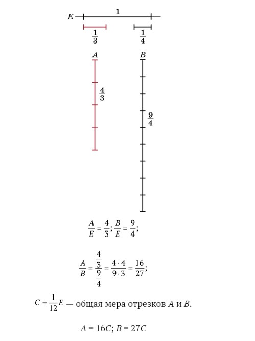Если (вслед за древними греками) назвать числом отношение отрезка к единичному, то возникнет задача записи числа. Удобна запись числа в виде десятичной дроби, отражающей некоторый процесс измерения. Например, измеряя диагональ квадрата со стороной 1, мы сначала отложим целый единичный отрезок и получим число 1. В остатке (он меньше 1) будем откладывать десятую часть единичного отрезка. Она ложится 4 раза, и останется отрезок длины, меньшей 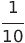.Мы получили десятичную дробь 1,4. Затем делим одну десятую снова на 10 частей, откладываем новый отрезок в остатке и записываем результат. Получим последовательность десятичных дробей с увеличивающимся количеством знаков после запятой : 1; 1,4; 1,41; 1,414; 1,4142; ….
Диагональ квадрата
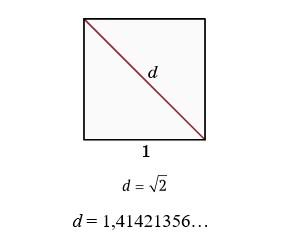Эту последовательность удобно представлять в виде одной бесконечной десятичной дроби 1,414213562373095…, которую и можно считать числом. Итак, по определению.
Действительное число – это бесконечная десятичная дробь.
2.Конечная десятичная дробь:
Рациональное число, представленное дробью, в знаменателе которой стоят только двойки и пятерки, запишется конечной десятичной дробью, так как на каком-то шаге десятичный процесс измерения закончится — некоторая доля единичного отрезка отложится в остатке целое число раз.
Например 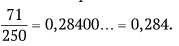
Если у несократимой дроби в знаменателе есть простые числа, отличные от 2 и 5, то процесс десятичного измерения станет периодическим, и цифры (одна или несколько) начнут периодически повторяться. Например, 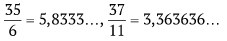
3. Иррациональные числа:
Это — числа, не являющиеся рациональными. Они записываются бесконечными непериодическими десятичными дробями. Примерами иррациональных чисел являются числа пятнадцать знаков которого после запятой было приведено выше, или число p (отношение длины окружности к диаметру): 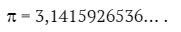
Мно¬жество всех действительных чисел обозначается буквой R: N ⊂ Z ⊂ Q ⊂ R.
Золотое сечение:
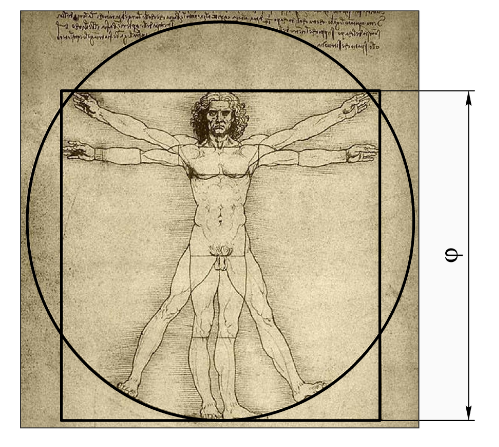Рисунок Леонардо да Винчи (1492), изображающий идеальные пропорции человеческого тела.
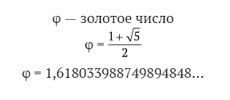Различные способы записи действительных чисел:
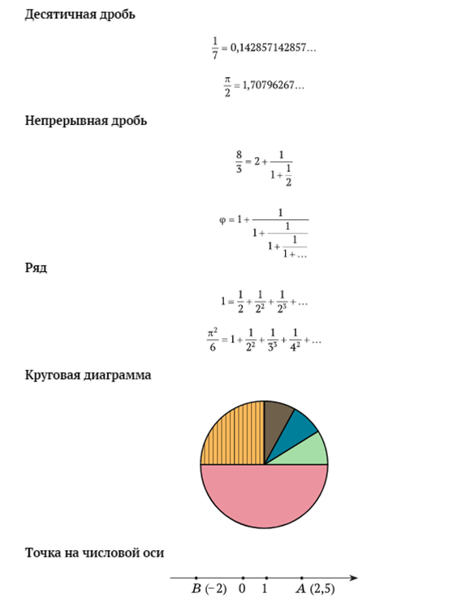Великие математики на оси времени
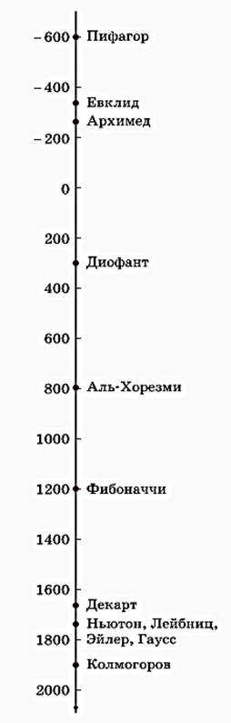Зачем понадобились действительные числа, и хватило ли их для решения задач? Как было отмечено, добавление к рациональным числам новых, иррациональных чисел было вызвано необходимостью измерять длины любых отрезков. С помощью так построенных действительных чисел уже ока¬залось можно измерять многие другие величины, которые были названы скалярными. Появление новых задач потребовало дальнейшего развития понятия числа, которое мы обсудим позже. Почему диагональ квадрата со стороной, равной единице, нельзя измерить рациональным числом? В этом вопросе содержится формулировка знаменитой теоремы, доказанной в VI в. до н. э. Доказательство. Предположим, что длину диагонали единичного квадрата можно записать в виде дроби 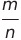, которую будем считать несократимой. По теореме Пифагора получаем равенство 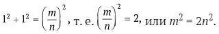
Так как справа стоит четное число, то и слева число m2, а значит и число m является четным числом: m=2k. Подставляя и сокращая на 2, получаем : 2k2 = n2. Таким же рассуждением получаем, что теперь n тоже должно быть четным числом. То, что у дроби числитель и знаменатель оказались четными числами, противоречит условию несокративости дроби. Это противоречие доказывает теорему.
Как работают с действительными числами?
Бесконечная десятичная дробь – это последовательность приближений конечными десятичными дробями к данному действительному числу. Для выполнения арифметических операций над бесконечными десятичными дробями эти операции делаются над конечными десятичными дробями. Например, будем складывать 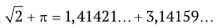
Получаем
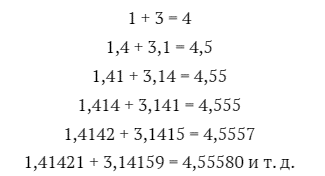Аналогично 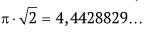
Разумеется, такие вычисления нужно выполнять с помощью калькулятора, но при этом следить, сколько цифр результата можно считать верными Действительные числа можно изобразить точками на Числовой оси. Если два числа a и b изображены точками A(a) и B(b) на числовой оси, то расстояние между точками A и B равно модулю разности чисел a и b:|AB| = |b - a|.
Для модуля выполняются два важнейших свойства:
|ab| = |a| · |b| и |a + b| ≤ |a| + |b|.
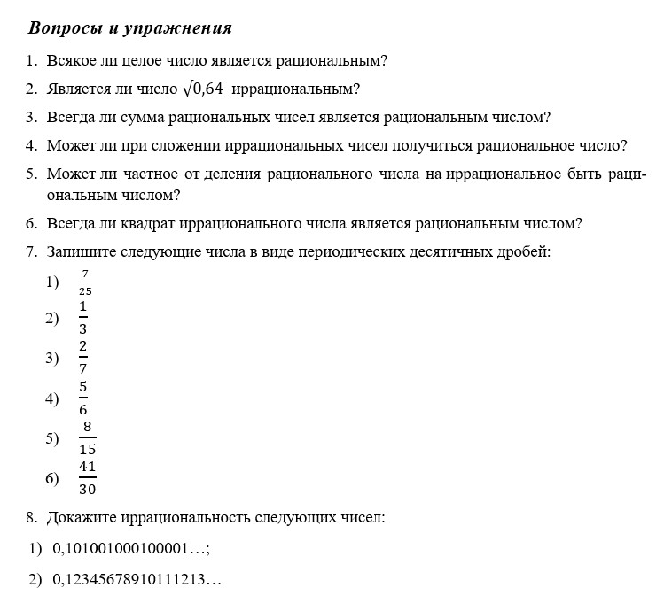